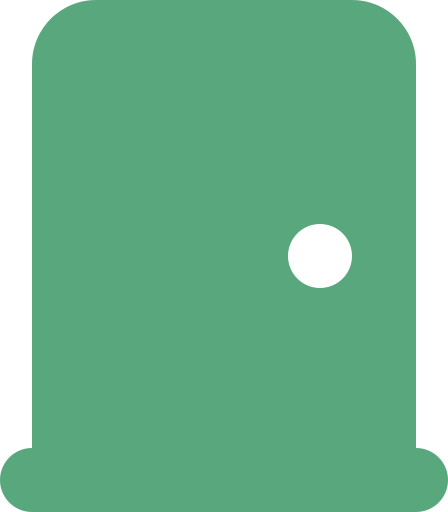

Portada
Arquitectura de Software
Semana 16 — La Importancia de la Seguridad en las APIs
La puerta que la mayoría de los ataques modernos usa para entrar — cierre de la Unidad 5 — con el caso real de Optus (2022) · Universidad de Antioquia · Ingeniería de Sistemas · 2554608 · 2026-2

Casi 10 millones de clientes. Ninguna clave, ningún token — solo una API abierta a internet.
Optus, 2022 — el segundo operador de telecomunicaciones más grande de Australia, y la brecha que puso a la industria a hablar de autenticación de APIs.

Transición
De un operador de telecomunicaciones a los datos de identidad de 4 de cada 10 australianos
Optus es el segundo mayor operador de telecomunicaciones de Australia, con millones de clientes actuales y anteriores. En septiembre de 2022, la compañía reveló una brecha que expuso los datos personales de cerca de 9.8 millones de personas — casi el 40% de la población del país.
A diferencia de Equifax (la sesión anterior), donde la falla estuvo en el parcheo y la segmentación de red, la causa raíz de Optus estuvo concentrada en un solo componente: una API expuesta a internet sin control de autenticación.
Caso · Ficha técnica
La brecha de datos de Optus
| Empresa | Optus (Singtel Optus Pty Limited) |
|---|---|
| Personas afectadas | Aproximadamente 9.8 millones — casi el 40% de la población de Australia, incluyendo exclientes |
| Datos expuestos | Nombres, fechas de nacimiento, teléfonos, correos y, para un subconjunto, direcciones y números de documento de identidad (licencia de conducir, pasaporte) |
| Causa raíz | Endpoint de API de verificación de identidad, expuesto a internet sin autenticación requerida |
| Divulgación pública | 22 de septiembre de 2022 |
| Consecuencias | Investigación parlamentaria en Australia, reforma regulatoria de protección de datos, reemisión de documentos de identidad a cientos de miles de clientes |
Caso · Cómo se explotó
Sin token, sin límite de solicitudes: bastaba con adivinar el siguiente identificador
La API en cuestión existía para verificar la identidad de clientes, y quedó accesible desde internet tras un cambio de configuración de red — sin exigir un token de autenticación para responder. Además, el endpoint no aplicaba ningún límite de tasa (rate limiting): cualquiera podía enviar solicitudes automatizadas, incrementando un identificador numérico, y la API respondía con los datos del siguiente cliente sin restricción.
Dos fallas se combinaron: no verificar quién preguntaba (autenticación) y no limitar cuántas veces se podía preguntar (control de consumo de recursos) — ninguna de las dos requiere un atacante sofisticado, solo un script simple.
Transición
Dos fallas con nombre propio en el estándar de seguridad de APIs
Lo que le ocurrió a Optus no es un caso aislado — es tan común que la OWASP (Open Web Application Security Project) mantiene, desde 2019, un catálogo específico solo para riesgos de seguridad en APIs, separado del OWASP Top 10 general de aplicaciones web. La versión más reciente es de 2023.
Concepto
¿Por qué las APIs son el blanco preferido?
En la Semana 15 vieron cómo un API Gateway centraliza el acceso a los microservicios internos de un sistema, y en toda la Unidad 4 cómo las APIs se volvieron el mecanismo estándar para exponer funcionalidad al mundo exterior.
- Exponen datos y lógica de negocio directamente, sin la capa visual que normalmente filtra qué se muestra.
- A menudo procesan más datos de los que la interfaz visual llega a mostrar ("excessive data exposure").
- Suelen documentarse públicamente — lo que ayuda tanto a desarrolladores como a atacantes.
- Crecen rápido: muchas organizaciones no llevan un inventario completo de cuáles APIs tienen activas.
Cada API nueva es, literalmente, una puerta nueva hacia el sistema — y cada puerta necesita su propia cerradura.
Concepto
OWASP API Security Top 10 (2023)
| Categoría | Riesgo |
|---|---|
| API1 | Broken Object Level Authorization |
| API2 | Broken Authentication |
| API3 | Broken Object Property Level Authorization |
| API4 | Unrestricted Resource Consumption |
| API5 | Broken Function Level Authorization |
| API6 | Unrestricted Access to Sensitive Business Flows |
| API7 | Server Side Request Forgery |
| API8 | Security Misconfiguration |
| API9 | Improper Inventory Management |
| API10 | Unsafe Consumption of APIs |
Optus (s05) es un caso de manual de dos de estas diez categorías — las vemos en detalle a continuación.
Concepto
Broken Authentication (API2): la falla que hundió a Optus
La categoría API2:2023 cubre endpoints que no verifican correctamente la identidad de quien hace la solicitud — tokens ausentes, mal validados, o mecanismos de autenticación implementados de forma inconsistente entre endpoints.
El endpoint explotado en Optus (s05) es un ejemplo directo de esta categoría: respondía con datos sensibles a cualquier solicitante, sin exigir ningún token ni credencial.
Concepto
Cómo se autentica una API: tres mecanismos comunes
| Mecanismo | Cómo funciona |
|---|---|
| API Keys | Identificador simple asociado a una aplicación o cliente; fácil de implementar, pero no identifica a un usuario individual. |
| OAuth 2.0 | Estándar abierto para delegar acceso sin compartir contraseñas; emite tokens de acceso con permisos y tiempo de vida limitados. |
| JWT (JSON Web Token) | Token firmado digitalmente con la identidad y los permisos del solicitante; el servidor lo verifica sin consultar una base de datos en cada solicitud. |
Ningún mecanismo por sí solo basta si, como en Optus, el endpoint simplemente no exige ninguno.
Concepto
Unrestricted Resource Consumption (API4): la otra falla de Optus
Esta categoría cubre APIs que no limitan cuántas solicitudes, cuántos datos o cuántos recursos de cómputo puede consumir un solo cliente — lo que permite tanto ataques de scraping masivo (como Optus) como ataques de denegación de servicio.
El control estándar para esta categoría es el rate limiting (limitación de tasa): definir un número máximo de solicitudes por cliente en una ventana de tiempo, y rechazar o retrasar el exceso.
El API Gateway (Semana 15) es, en la práctica, el lugar arquitectónico correcto para aplicar rate limiting de forma centralizada, sin que cada microservicio lo implemente por separado.
Tensión
Autenticación estricta vs. facilidad de uso para quien consume la API
| API abierta o poco restrictiva | API con autenticación y rate limiting estrictos | |
|---|---|---|
| Facilidad de integración | Alta — cualquiera empieza a usarla de inmediato | Requiere registro, tokens, manejo de expiración |
| Riesgo de abuso | Alto — sin control de quién ni cuánto consume | Bajo — cada solicitud se verifica y se limita |
| Consecuencia si algo falla | Como Optus: exposición masiva de datos | Un atacante sin credenciales válidas no pasa del primer control |
La tensión es real, pero el caso de Optus muestra el costo de resolverla siempre a favor de la facilidad de uso.
Concepto
Cifrar el tránsito y poder ver lo que pasa
- TLS/HTTPS en cada llamada: sin esto, cualquier dato viaja en texto plano y puede ser interceptado en la red.
- Logging y monitoreo de la API: registrar quién llamó, cuándo y con qué patrón, para poder detectar un scraping masivo (como el de Optus) mientras ocurre, no meses después.
Equifax (la sesión anterior) fue ciego durante 76 días por un certificado vencido en su monitoreo de red — la misma lección se repite a nivel de API: sin visibilidad, un abuso puede durar indefinidamente.
Concepto
Zero Trust también aplica a las APIs
El principio de Zero Trust visto en la sesión anterior (nunca confiar, siempre verificar) se traduce, a nivel de API, en verificar la identidad y los permisos en cada solicitud — sin asumir que una llamada es legítima solo porque viene de otro servicio interno o de una IP conocida.
Si Optus hubiera aplicado este principio a su endpoint de verificación de identidad, cada solicitud habría requerido un token válido, sin importar de dónde viniera.
Interacción
Auditen las APIs de su proyecto contra el Top 3
En equipos, revisen los endpoints de API que ya tienen implementados o planeados en su proyecto de CodeF@ctory:
- ¿Cada endpoint exige autenticación (s09), o hay alguno que responde sin verificar identidad?
- ¿Existe algún límite de solicitudes (rate limiting, s11) o un cliente podría hacer miles de solicitudes seguidas sin restricción?
- ¿Alguna respuesta de su API devuelve más datos de los que la pantalla realmente muestra al usuario (excessive data exposure)?
10 minutos · identifiquen al menos un hallazgo concreto por equipo
Concepto en disputa
"Nuestra API es interna, no la ve nadie de afuera"
Es una de las justificaciones más comunes para no asegurar un endpoint — y es exactamente el supuesto que Zero Trust (s14) rechaza. El endpoint de Optus tampoco fue diseñado para ser público: quedó expuesto por un cambio de configuración de red, sin que nadie lo revisara contra un inventario de APIs activas (la categoría API9 — Improper Inventory Management, del catálogo visto en s08).
"Interna hoy" no es una garantía de seguridad — es un estado que puede cambiar con un solo cambio de configuración, como ocurrió en este caso real.
Por eso Zero Trust trata cada solicitud igual, sin importar si el origen "debería" ser confiable.
Síntesis
Ideas clave de hoy
- La brecha de Optus (2022, ~9.8 millones de personas) mostró que basta con dos fallas de API — sin autenticación y sin límite de solicitudes — para exponer masivamente datos sensibles.
- OWASP mantiene un catálogo específico, el API Security Top 10 (2023), separado del Top 10 general de aplicaciones web.
- Broken Authentication (API2) y Unrestricted Resource Consumption (API4) son las dos categorías que explican el caso de Optus.
- API Keys, OAuth 2.0 y JWT son los mecanismos de autenticación más comunes — ninguno protege si, como en Optus, el endpoint simplemente no los exige.
- Zero Trust aplica igual a las APIs: verificar cada solicitud, sin asumir que el origen es confiable por defecto.
Síntesis · Cierre de la Unidad 5
Dos sesiones, una sola unidad: Aspectos de Seguridad en Arquitecturas de Software
Con esta sesión cerramos la Unidad 5 completa, dos sesiones en la Semana 16:
- Principios de Arquitectura de Software Segura — CIA, Security by Design, mínimo privilegio, defensa en profundidad, Zero Trust y threat modeling con STRIDE, con el caso real de Equifax (2017).
- La Importancia de la Seguridad en las APIs (hoy) — autenticación, rate limiting y el OWASP API Security Top 10, con el caso real de Optus (2022).
Toda la Unidad 5 respondió una sola pregunta: una vez que un sistema se construye y se expone al mundo (Unidades 1-4), ¿qué principios y controles arquitectónicos concretos evitan que se convierta en la próxima brecha documentada?
Cierre
Para la próxima semana
- Repasar ambas sesiones de la Unidad 5 antes de la evaluación del hito "Seguridad Arquitectónica y Hardening" (20%), programado esta misma semana — cubre exactamente seguridad en APIs y threat modeling.
- Revisar las APIs de su proyecto de CodeF@ctory contra los hallazgos del ejercicio de hoy (s15).
La Semana 17 cierra el curso con la sustentación final arquitectónica y la presentación del proyecto completo.